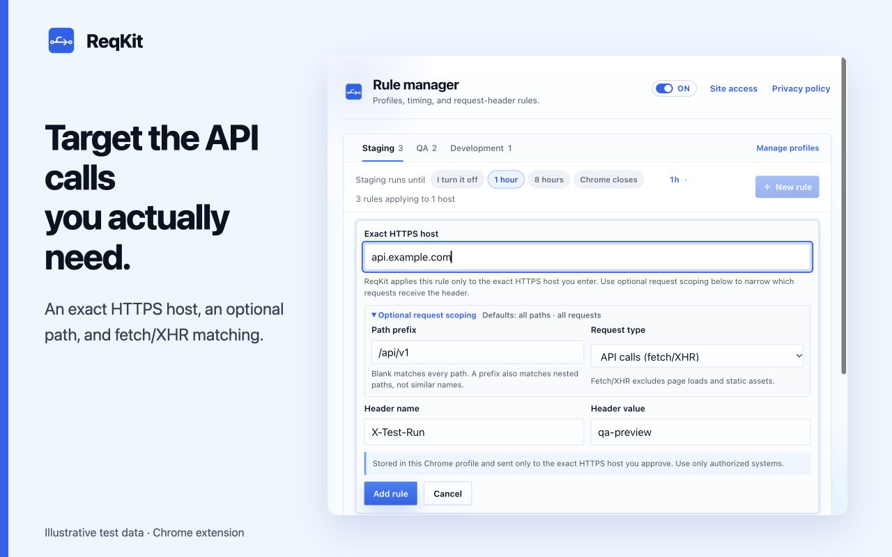

Create your first request-header rule
Use a harmless test header such as X-Debug-Mode: enabled on an HTTPS service you own or are authorized to test. All domains and values in the screenshots are illustrative; replace them with your own test host.
- Install ReqKit from the Chrome Web Store, then open the extension on your HTTPS test site. Review the first-use privacy notice.
- Choose Add rule for this site. Check the Exact HTTPS host, such as
api.example.com. - Enter
X-Debug-Modeas the header name andenabledas the value. - If you need a narrower match, expand Optional request scoping. Enter
/api/v1as the path prefix and select API calls (fetch/XHR). - Choose Add rule and grant Chrome site access to the exact HTTPS host when prompted. Keep the relevant profile active, the master switch On, and the rule On.

Understand which requests match
The rule matches the request's destination host, which may differ from the website you are viewing. A frontend on app.example.com making a request to api.example.com needs a rule for api.example.com.
- An exact host does not include its sibling hosts or subdomains.
- With no optional scope, the rule covers all paths and supported request types on that HTTPS host.
/api/v1matches that path and its nested paths, such as/api/v1/users. It does not match/api/v10.- The fetch/XHR option excludes page loads and static assets. It does not capture requests made by curl, a terminal, or another application.
Verify it in Chrome DevTools
- Open DevTools on your test page and select Network.
- Trigger a fresh request that matches the destination, path, and request type.
- Select that request, open Headers, and check the Request Headers section for your test header. A cached request or provisional headers view may not show what actually reached the server; your test server's request logs can confirm it.
- Pause the rule in ReqKit and repeat the request to check that the added value stops being applied.
If the header is missing
Check the exact destination hostname, HTTPS protocol, selected profile, rule switch, master switch, and timer. Review Site access in the rule manager. A rule that lacks permission stays saved and shows a Grant action. Confirm the request matches your path and request-type scope, and check for another extension or application setting the same header.
ReqKit modifies request headers; it does not modify response headers or bypass CORS. A cross-origin custom header can still require the server to allow it. Keep production credentials out of demo rules: enabled values are sent to matching destinations and may appear in their logs.